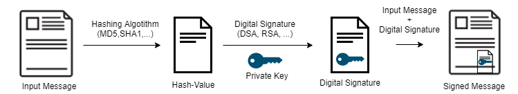
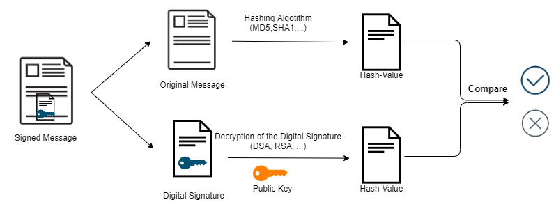

Digital Signature
Digital Signature
The digital signature is applied to the hash(digest) of the message; this because the hash is smaller than the message.
main goalIntegrity → Any message alteration will be detected by the Receiver during the comparison of the hashes between the Original Message and the Digital Signature
Signing:
Verification:
